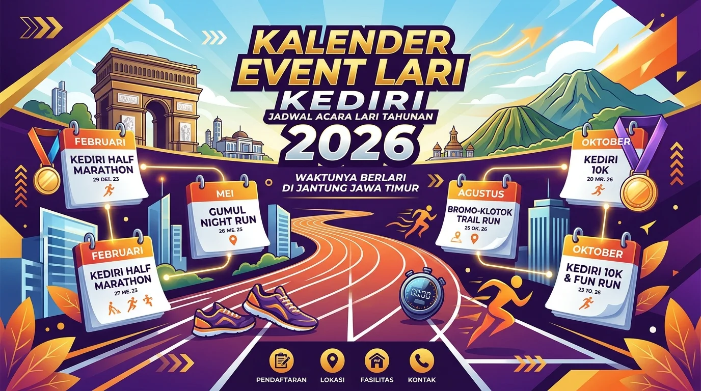

Daftar Isi Artikel
Kediri Event — Kediri Run 2026 digelar Minggu, 6 September 2026 di kawasan Taman Hijau Simpang Lima Gumul, Kabupaten Kediri, dengan kategori 5K dan biaya pendaftaran Rp0, diselenggarakan kolaborasi TP PKK dan Dinas Pendidikan Kabupaten Kediri menurut data event resmi Disbudpar Jawa Timur.
Ringkasan Inti Kediri Run 2026:
- Event Lari Berskala Kabupaten: Kediri Run 2026 adalah ajang lari berkonsep sport tourism di kawasan hijau Simpang Lima Gumul (SLG).
- Waktu & Biaya Pendaftaran: Acara berlangsung Minggu, 6 September 2026 dengan kategori 5K dan tercatat tanpa biaya pendaftaran (Rp0).
- Partisipasi Luas: Peserta berasal dari kalangan pelajar, komunitas lari Kediri Raya, hingga masyarakat umum.
- Agenda Unggulan Daerah: Event ini resmi masuk kategori Unggulan Daerah pada kalender pariwisata Disbudpar Jawa Timur.
- Kaya Event Lari Lain: Kediri memiliki deretan lomba lari sepanjang 2026, mulai dari fun run kampus hingga trail run di lereng Gunung Klotok.
Fakta Utama Kediri Run 2026
Tanggal, lokasi, kategori jarak, dan biaya pendaftaran adalah empat fakta utama Kediri Run 2026 yang tercatat dalam data event resmi:
- Tanggal: Minggu, 6 September 2026.
- Lokasi: Kawasan Taman Hijau Simpang Lima Gumul, Kabupaten Kediri.
- Kategori: 5K (5 Kilometer).
- Biaya pendaftaran: Rp0 (Gratis) menurut data event Disbudpar Jawa Timur.
Detail teknis seperti titik kumpul start, jam flag off, kuota peserta, dan mekanisme pengambilan race pack sebaiknya mengacu pada rilis penyelenggara, karena data kalender event daerah hanya memuat ringkasan umum acara.
Penyelenggara dan Tujuan Acara
Kediri Run 2026 diselenggarakan atas kolaborasi TP PKK Kabupaten Kediri bersama Dinas Pendidikan Kabupaten Kediri untuk menggalakkan kebiasaan hidup sehat sekaligus mempromosikan potensi wisata daerah berbasis sport tourism.
Konsep sport tourism berarti event olahraga dirancang sebagai magnet kunjungan, sehingga peserta tidak hanya berlari tetapi juga mengenal kawasan wisata Simpang Lima Gumul. Pendekatan ini sejalan dengan kalender wisata Pemkab Kediri yang memadukan olahraga, budaya, dan ekonomi kreatif lokal.
Suasana Lari di Kawasan Taman Hijau SLG
Taman Hijau SLG dipilih sebagai lokasi karena kawasannya luas dan teduh, menjadi pusat berbagai event besar di Kabupaten Kediri seperti halnya Festival Kuno-Kini 2026.
Kawasan ini sangat familiar bagi warga Kediri karena kerap dipakai untuk festival, pameran, dan aktivitas olahraga rutin. Bagi pelari pemula, lokasi yang relatif terbuka, rindang, dan mudah diakses menjadi nilai tambah utama dibanding rute yang melewati jalan raya padat kendaraan.
Cara Mendapat Info Edisi Kediri Run Berikutnya
Memantau akun resmi Pemkab Kediri, TP PKK, dan Dinas Pendidikan Kabupaten Kediri, serta halaman ini, adalah cara paling praktis untuk mendapat info pendaftaran Kediri Run edisi berikutnya:
- Pantau Akun Resmi Penyelenggara: Cek informasi resmi yang biasanya mengumumkan tanggal dan mekanisme pendaftaran online.
- Simpan Halaman Ini: Tim Kediri Event memperbarui informasi jadwal dan tautan formulir begitu edisi baru diumumkan.
- Siapkan Kondisi Fisik: Mulai latihan joging bertahap lebih awal agar siap dan bugar saat pembukaan pendaftaran dibuka.
Kalender Event Lari Kediri 2026 Lainnya
Event lari di Kediri sepanjang 2026 mencakup fun run, half marathon, hingga trail run, dengan kategori mulai 5K sampai 23K:
| Event Lari | Tanggal Pelaksanaan | Lokasi Venue | Kategori Jarak |
|---|---|---|---|
| Waruturi Fun Run | 15 Februari 2026 | Bendung Waruturi, Gampengrejo | 5K & 10K |
| Universitas Kadiri Runfest | 11 April 2026 | Kampus Universitas Kadiri | 6K |
| Kediri Half Marathon | 17 Mei 2026 | Kawasan Bandara Dhoho Kediri | 5K, 10K, HM |
| FIESTA Fun Run | 24 Mei 2026 | UNP Kediri Kampus 4 | 5K |
| Maju Fun Run | 31 Mei 2026 | Kediri Town Square | 5K |
| Hastari Run Vol. 2 | 8 Agustus 2026 | Lapangan Banyakan, Kab. Kediri | 5K & 10K |
| Syiar QRIS Run | 16 Agustus 2026 | Kediri Town Square | 5K |
| Kediri Run 2026 | 6 September 2026 | Taman Hijau SLG | 5K (Gratis) |
| Klotok Trail Run | 28 Agustus 2026 | Kawasan Goa Selomangleng | 8K & 23K Trail |
| B'LIEVE Fun Run | 17 Oktober 2026 | Kampus STIKES RS Baptis Kediri | 5K |
Pelajari persiapan pemula pada panduan fun run Kediri untuk memahami rute, teknik hidrasi, dan pengambilan nomor dada.

Kalender event lari Kediri 2026 dari Februari hingga Oktober dalam bentuk infografik jadwal resmi.
Tips Memilih Event Lari 5K Pertama
Memilih kategori 5K, mengecek fasilitas race pack, memperhatikan jam start, dan berlatih bertahap beberapa minggu adalah empat tips penting dalam memilih event lari 5K pertama Anda:
- Kategori 5K Cocok untuk Pemula: Kategori 5K sangat ramah pemula karena jaraknya relatif singkat dan dapat diselesaikan dengan kombinasi lari santai serta jalan cepat.
- Cek Fasilitas Race Pack: Perlengkapan seperti nomor BIB, medali finisher, jersey, dan refreshment berbeda pada tiap event sehingga penting untuk memeriksa benefit sebelum mendaftar.
- Perhatikan Jam Flag Off: Jam start pagi hari membantu Anda menghindari terik sengatan matahari dan menikmati udara sejuk kawasan Simpang Lima Gumul.
- Latihan Bertahap 2-4 Minggu: Membiasakan joging rutin beberapa minggu membantu tubuh beradaptasi secara bertahap tanpa memicu cedera (ini merupakan tips umum, bukan nasihat medis).
Pertanyaan yang Sering Diajukan (FAQ)

Ditulis oleh: Erlang Sinatrya Putra Yusya
Event Content Specialist & EditorSpesialis kurasi konten dan liputan agenda hiburan, olahraga, dan festival di Kediri Event. Berkomitmen menghadirkan informasi jadwal terverifikasi dan panduan event terbaik bagi masyarakat Kediri Raya.
Profil Kediri Event